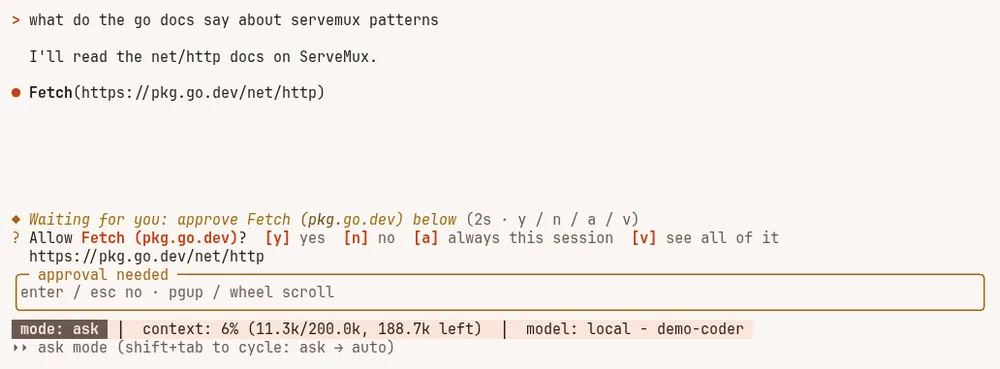
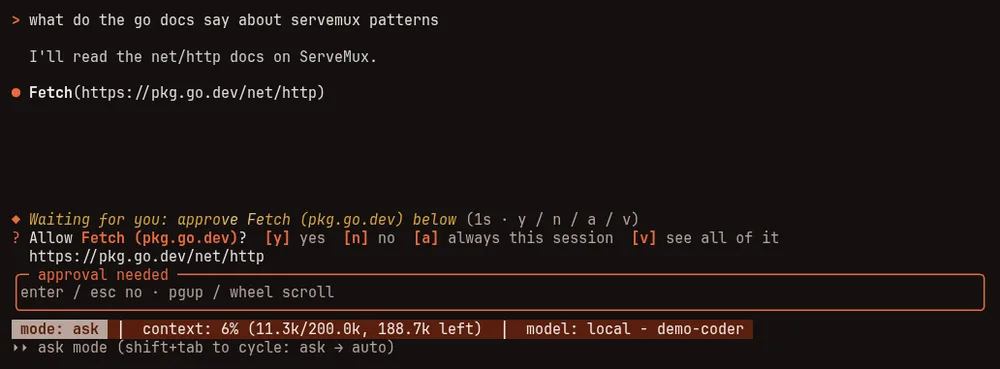

Using the harnessDay to day11 min read
Web pages, downloads and finding files #
On this page
Four tools that save the agent a lot of guessing, eh. web_fetch reads a page on the web, download saves a file
from one, glob finds files by name, and read_file now shows the agent a picture or a PDF instead of a screenful of
bytes. The two that touch the network ask you first, site by site, unless you have said a site is fine.
In plain words #
- Reading a page. Ask for "the changelog of that library" or "what the docs say about
asyncio.timeout" and the agent can read the page itself withweb_fetch. A web page comes back as plain text with its headings, lists, links, code and tables, in pages of a few hundred lines, so a long page is read a bit at a time. - You decide which sites. The first time the agent wants a site, you are asked: Allow Fetch (docs.python.org)? Always this session is for that site only, never for the whole web. A rule in your settings can allow a site for good (see Rules by site). A download is asked about each time, since where it writes changes.
- Network off means off. With the session's network turned off (
/sandbox network deny, or the default while a session is shared with your phone), both tools refuse and send nothing, like commands. - What it never reaches. Nothing on your own machine, nothing on your home or office network, nothing on a cloud's private network, and never a cloud's metadata service: those are refused whatever a rule says, and whatever a page or a redirect points at. See What is never reached.
- What a page says is not an order. The page's text is handed to the agent between two marked lines that say it is the page's own text: information, not instructions. Text a page hides from people (hidden blocks, scripts, styles) is dropped before the agent sees it.
- Saving a file.
downloadsaves a file from the web into your project: written whole or not at all, never larger than the limit (100 MB unless you change it), never made executable. It writes only where the agent may write files, your rules for writing files hold for it too, and it asks you each time unless a rule allows the site. - Finding files.
globlists files by name (src/**/*.ts,*_test.go), newest first, without what git ignores. It only looks, so it does not ask, just likegrep. - Pictures and PDFs.
read_fileon a.png,.jpg,.gif,.webpor.pdfshows the agent the file itself, the way/lookdoes. If the model you use cannot take pictures, the agent is told so and nothing is sent. - Plan mode.
web_fetchandglobare offered while planning (they only look);downloadwaits until you approve the plan. See Plan mode.


Reading a page: web_fetch #
| Argument | What it does |
|---|---|
url | The page, http or https only. A URL with a user name or password in it is refused |
prompt | What the agent is looking for; shown with the result, to keep it on track |
offset, limit | Which lines of the page's text: from line offset, at most limit lines (400 by default) |
What comes back, on its first lines: where the answer came from (after any redirect on the same site), what it was
(html, as Markdown, json, plain...), which lines are shown and how to ask for the next ones. Then the text,
between <<<web and >>>web lines that carry the same random tag, so nothing on the page can pretend to be the end of
it.
- HTML becomes Markdown: headings, paragraphs, lists, links (made absolute), emphasis, code blocks, quotes and tables. Scripts, styles, forms, frames and anything the page hides from a reader are dropped.
- Text, JSON, XML, YAML come back as they are, decoded to UTF-8 from the character set the site declares.
- Anything else (an image, an archive, a PDF on the web) is refused with a pointer to
download. - Long pages. At most
web.fetch_max_mb(5 MB by default) of an answer is read; a longer page is cut there, and the result says so. A page read in the last 15 minutes is read again from memory, so paging through a long one asks the site once. - An error page (HTTP 404, 500...) is shown as the site's error page and marked as an error.
- Redirects. Followed on the same site (
httptohttpstoo, never back tohttp), at most 5. A redirect to another site is not followed: the agent is told where it leads, and fetching it is a call of its own, asked about (or allowed) for that site.
What is sent: a GET request with a generic User-Agent that names the program and nobody, no cookies (none are kept
between requests either), no credentials, nothing from your configuration. Your HTTPS_PROXY, HTTP_PROXY and
NO_PROXY settings are followed.
Saving a file: download #
| Argument | What it does |
|---|---|
url | The file, http or https, with the same network rules as web_fetch |
path | Where to save it. Missing folders are made |
- It writes only where
write_filemay write: your project and the temporary folder by default, never your SSH keys, cloud credentials, Maple's own configuration or git's hooks. A refusal is shown as one. - The file is saved under a temporary name beside its destination and moved into place only once it is complete and
within
web.download_max_mb(100 MB by default). A file that turns out larger is refused and nothing is left behind; a file it would have replaced stays as it was. - It is saved as the server sent it (not decompressed), with the mode a new file gets (or the mode of the file it replaces), never executable. Running what was downloaded is a separate step (a command), asked about like any command.
- A rule of yours for writing files holds for where it writes: with
write_file(*.env)denied, no download lands on a.envfile, whatever the site's rule says. Always is never offered for a download. - Half an hour at most, and a transfer that sends nothing for a minute is stopped. A folder made for a download that then fails is removed again.
- In an agent's own copy of the project, it writes into the copy, like
write_file. - The result names the size, the type the server gave, where it went and its SHA-256, so the agent can check it against a published checksum.
Finding files: glob #
| Argument | What it does |
|---|---|
pattern | * any characters but /, ** any folders (none too), ? one character, [abc] a class, {a,b} either. A pattern without a / matches file names in every folder: *.go finds Go files anywhere |
path | The folder to search (the current one by default) |
- Newest first: the files someone is working on come up before the ones nobody has touched in years.
- At most 200 results, with how many more there were ("30 more not shown: narrow the pattern or the folder").
- What git ignores is left out: every
.gitignorefrom the top of the repository down (with!to bring a path back,dir/for folders only, and a leading/to anchor), and.git/info/exclude..gitandnode_modulesare always skipped. The result says how many were ignored. - Places the agent may not read (your SSH keys, credentials and the like) are skipped and counted, never named.
- A file name with a terminal escape, a line break or an invisible direction mark in it is listed in quotes, written
out (
"a\x1b]0;b\a.txt"), so it reads as what it is and never acts on your screen. The same goes forgrep; and anything a tool returns is shown in the terminal and on the phone with such characters made spaces.
Pictures and PDFs: read_file #
read_file on a picture (.png, .jpg, .jpeg, .gif, .webp) or a PDF shows the agent the file itself instead of
its bytes. The result says what it is (PNG image, 1200×800, 245 KB), and the file follows the tool results in the
conversation, for the agent to look at.
- Limits. A picture up to 3 MB (the same limit as
/look, set by what model backends accept), a PDF up to 20 MB; at most 4 pictures or PDFs per step. A file named.pngthat is not a PNG is refused, not sent. - PDF pages.
pages(3,1-5, at most 20 at a time) tells the agent which pages to look at. The whole PDF is sent either way: Maple does not cut pages out of a PDF or pull its text out. - A model that cannot take pictures. The agent is told the file could not be shown, and why; nothing is sent.
- Your prompt cache. The picture is added after everything already sent, never in the middle, so the provider's
prompt cache keeps hitting. Like a picture you attach with
/look, it stays in the conversation and is sent again with later requests until the conversation is compacted. - The same rules apply as for reading any file: a picture in
~/.sshis refused, not shown.
Rules by site #
web_fetch and download rules name a site, not a URL:
harness:
permission:
rules:
- { pattern: "web_fetch(*.internal-wiki.example)", decision: deny }
- { pattern: "web_fetch(docs.python.org)", decision: allow }
- { pattern: "web_fetch(*.github.com)", decision: allow } # api.github.com, not github.com itself
- { pattern: "download(files.pythonhosted.org)", decision: allow }
web:
allow_domains: [docs.python.org, "*.readthedocs.io"] # web_fetch only, after your rules- A rule names the site alone, without
https://, a port or a path: a rule with one of those is refused when the settings load (it could never match). The site in a rule and in the request are read the same way (case, a trailing dot, another script:bücher.exampleisxn--bcher-kva.example, escapes), so they never disagree about where it goes. *.github.comcovers the sites undergithub.com, notgithub.comitself: write both if you want both.- The first rule that matches decides; a deny wins in every mode. A site no rule names asks. In
autooryolomode an ask goes ahead, as for every tool that asks; a deny still holds. web.allow_domainsis the short way to allowweb_fetchfor a few sites; it never coversdownload, and a project's own config cannot set it. A wildcard over a place where anyone can publish (*.github.io,*.co.uk) is refused: name the sites themselves.- An allowed site can be sent anything in the URL the agent asks for. Allow sites you trust with what the agent reads, not just sites you trust to read.
--allow-tool 'web_fetch(docs.python.org)'and--deny-tooltake the same forms for one run (see Approvals when nobody answers).- Nobody there. In a
--promptrun, an A2A task or anything nobody watches, a site no rule allows is refused, recorded and said, and the run goes on without the page.
What is never reached #
Whatever a rule says, whatever the agent was told by a page, and after every redirect, the network tools refuse:
| Refused | Examples |
|---|---|
| This machine | localhost, 127.0.0.1, ::1, 0.0.0.0 |
| Private networks | 10.x, 172.16–31.x, 192.168.x, fc00::/7 |
| Shared and link-local addresses, where cloud metadata services answer | 169.254.169.254, 100.64.0.0/10, fe80::/10, fd00:ec2::254 |
| Multicast, broadcast, reserved and documentation ranges | 224.0.0.0/4, 240.0.0.0/4, ff00::/8, 192.0.2.0/24 |
| The same addresses written another way | ::ffff:127.0.0.1, IPv4 inside NAT64 or 6to4 addresses, 2130706433, 0x7f.1, 0177.0.0.1 |
| This machine's own addresses, its public ones too | the address your cloud machine is reached at |
| Maple's own ports, on any address | 11535, 11537, 11539, 11541, 11545, 11549 |
| Anything but http and https | file:, ftp:, gopher:, data: |
The check is made on the address actually connected to, after the site's name was looked up, so a name that points at your machine (or changes its answer between two look-ups) is refused like the address itself. One name that answers with a public address and a private one is refused altogether.
Through a proxy (HTTPS_PROXY), Maple looks the site's name up and checks it first, then asks the proxy to connect
to that very address (the certificate is still checked against the site's name), so the proxy never looks the name
up again. The proxy itself may be on your machine, and is reached only for requests sent through it.
| Proxy | How it is used |
|---|---|
http:// | CONNECT to the checked address. Only https URLs go through it; a plain http URL that would use it is refused (use its https form) |
https:// | The same, over TLS to the proxy, checked against the proxy's own name; spoken in HTTP/1.1 (CONNECT is an HTTP/1.1 request, whatever the site speaks inside the tunnel) |
socks5://, socks5h:// | Asked to connect to the checked address, never the name, for https and http URLs alike |
| anything else | Refused before anything is sent: web_fetch needs an HTTP(S) proxy that accepts CONNECT to an address (or a SOCKS5 proxy) |
A proxy that allows only names, not addresses, refuses these requests, and the result says so in those words, with the proxy's own answer.
A page built to be heavy. Laying a page out as Markdown has a time budget (a few seconds), a cap on elements and
on the text it makes, and keeps lists and quotes to a few levels of indentation. A page nested too deeply to lay out
in time is read as its plain text instead, in order. Either way the result ends with a line that says what happened
([the page was cut here: ...]).
Settings #
| Key | Default | What it does |
|---|---|---|
web. | none | Sites web_fetch reads without asking |
web. | 5 | The most web_fetch reads of one answer, in MB (1 to 50) |
web. | 100 | The largest file download saves, in MB (1 to 4096) |
All three are in /settings, under Tools, and in config.yaml under harness.web. See
Configuration.
On a phone and in the transcript #
The calls read in everyday words: Fetch with the URL, Download with the URL and where it goes, Find files with the pattern. A run of looking calls folds to one line ("Read 2 files, fetched 1 page").
Tested on Linux, with local test servers and a fake name resolver; no real site was fetched for these checks. macOS and Windows were not run.